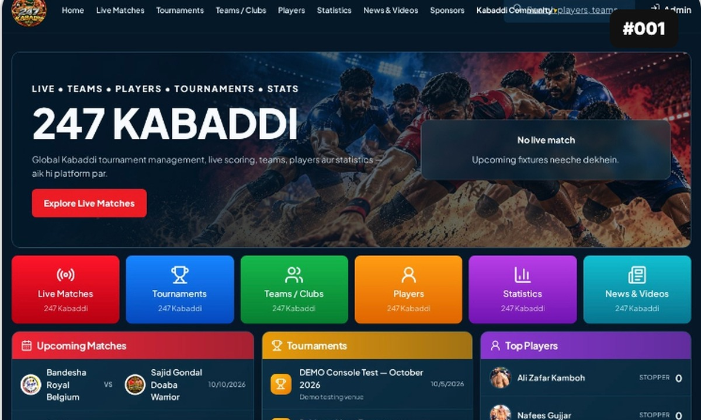
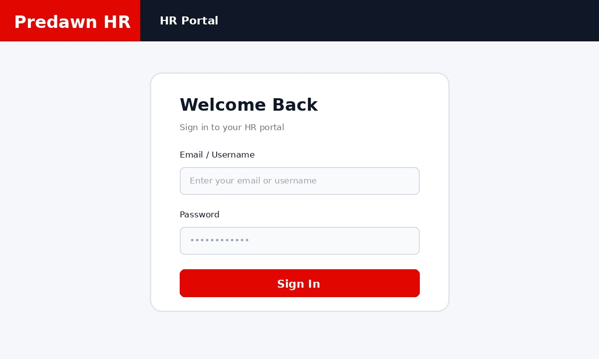
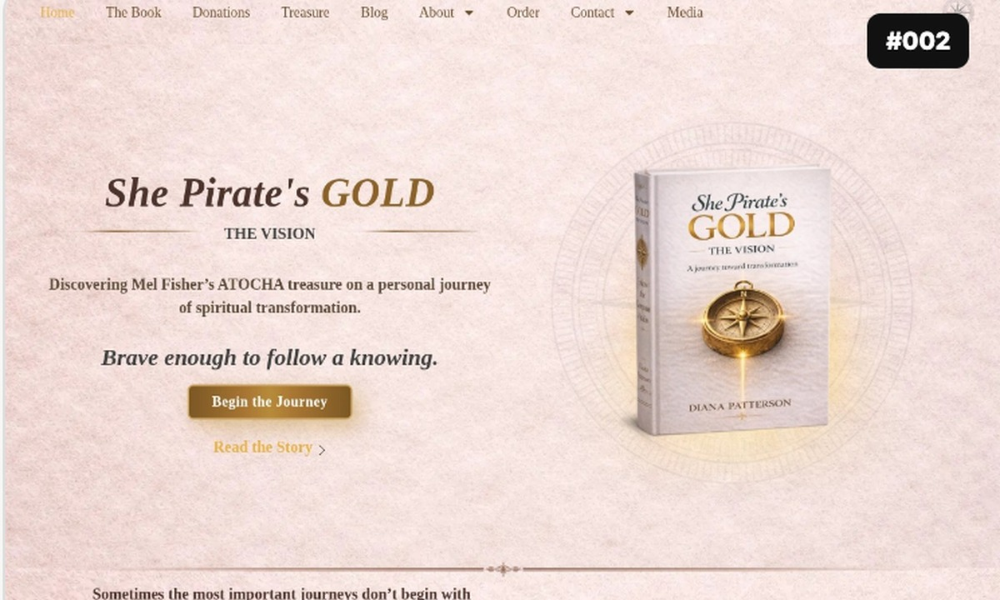
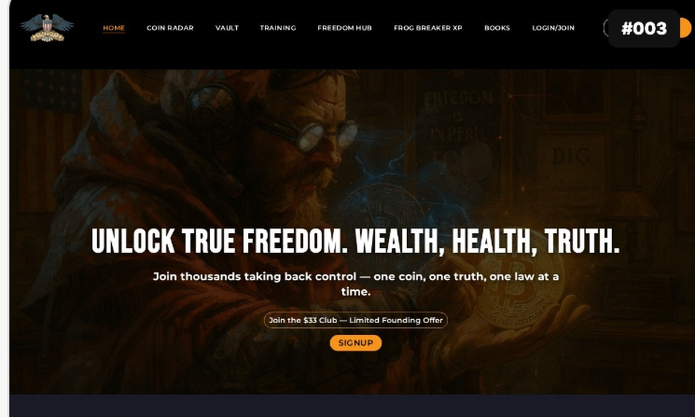
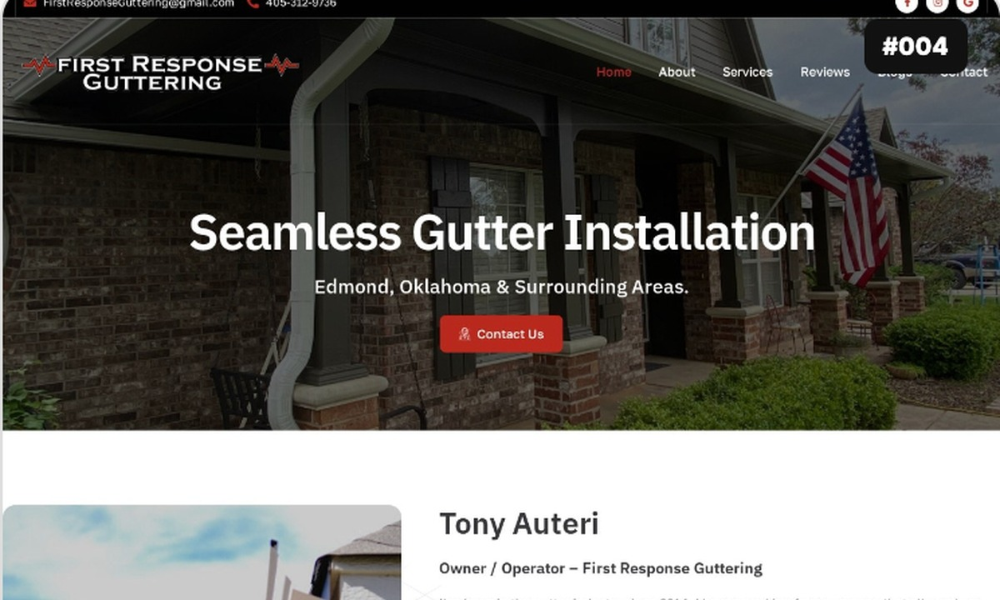
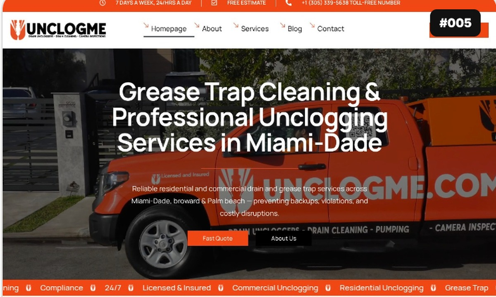
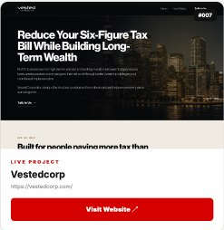
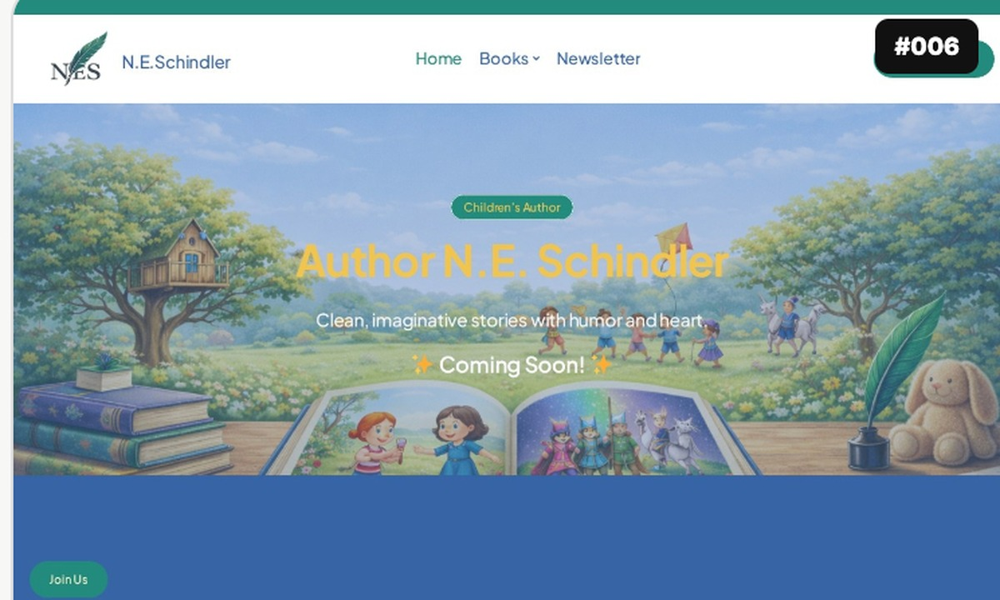

HealthcareService websites and digital information
FULL-STACK DEVELOPER & SEO EXPERT
I Build Websites &
Digital Solutions That
Grow Businesses
Modern websites, web applications, e-commerce stores and SEO strategies that turn ideas into real results.
129+Projects in Portfolio Archive
7+Years Professional Experience
◉Global Clients
USA, UK, Canada, Australia & beyond
USA, UK, Canada, Australia & beyond
◎Results Driven
SEO & High-Performance Websites
SEO & High-Performance Websites
 WordPress
WordPress Bootstrap
Bootstrap MySQL
MySQL PostgreSQL
PostgreSQL AWS
AWS Laravel
Laravel PHP
PHP Node.js
Node.js React
React HTML5
HTML5 CSS3
CSS3 JavaScript
JavaScript jQuery⌕ SEO
jQuery⌕ SEO
ABOUT ME
Building digital
experiences that deliver.
I’m Muhammad Jahangir, a full-stack developer and SEO specialist based in Lahore, Pakistan. I started in IT support before moving into WordPress/PHP development, web development and full-stack projects.
My work spans WordPress, Shopify, frontend development, React, Node.js, MERN-stack applications and SEO. I focus on practical solutions: clean interfaces, dependable functionality, clear communication and websites that are easier to maintain.
I work with businesses to build new digital experiences, improve existing websites, resolve technical issues and strengthen performance and search visibility.
Every project is approached with attention to usability, reliable performance and the details that make a website easier for people to use. I value honest communication, thoughtful problem-solving and solutions that can grow with a business over time.
BASED INLahore, Pakistan
EXPERIENCE7+ years
AVAILABILITY30+ hrs/week
ENGAGEMENTHourly, fixed or contract
Industries & project types
08 sectorsTravel & bookingTravel services and booking journeys
E-commerce & marketplacesOnline stores and product catalogs
Business & corporateCompany websites and lead generation
Security servicesService information and enquiries
LegalProfessional service websites
Industrial & labsTechnical and business information
Sports & leisureSports platforms and event content
PROJECT REACHPakistanUnited StatesUnited KingdomCanadaUAE
⌕Root-cause fixesDiagnose first, then make focused changes.
▤Clean, maintainable codeReadable implementation for future updates.
▱Clear communicationPractical progress updates and quick replies.
♧Long-term supportSupport and improvements based on scope.
INDUSTRIES & PROJECT TYPES
Digital solutions for real-world needs
Project structure, integrations and content are adapted to the goals of each business rather than forced into one template.
E-commerce & Marketplaces
Product catalogs, store experiences, checkout flows and seller-focused websites.
Business & Corporate
Credible company websites, service pages, lead capture and clear brand messaging.
Sports & Booking
Event-focused interfaces, schedules, booking flows and information-rich platforms.
Local & Home Services
Mobile-first service pages, local visibility and straightforward enquiry journeys.
Portals & Internal Tools
Structured dashboards, role-based workflows and database-driven interfaces.
SEO & Performance
Technical cleanup, page-speed improvements and search-friendly site architecture.
WordPress Development
Custom themes, plugins and high-performance websites.
Shopify Development
E-commerce stores that sell and scale.
Webflow Development
Responsive marketing and CMS websites.
Full-Stack Development
React, Node.js, Express and custom web applications.
Square Development
Square online stores and integrations.
Chart.js & Dashboards
Custom dashboards and data visualization.
SEO Services
Technical SEO, on-page, off-page and local SEO.
SEO EXPERTISE
Data-Driven SEO
for Real Growth
Let's help businesses rank higher, get more traffic and turn visitors into customers.
Get a Free SEO Audit →⌕
Keyword Research
Find high-value opportunities.
▤
On-Page Optimization
Optimize content for better rankings.
⚙
Technical SEO
Fix technical issues and improve Web Vitals.
⌖
Local SEO
Get found in your local area.
CAREER JOURNEY
Experience built
through real work
Professional experience across IT support, WordPress/PHP development, full-stack web applications and SEO.
PROFESSIONAL EXPERIENCE7+ yearsFeb 2019 to Oct 2026, counting overlapping roles only once
CORE SPECIALTYFull Stack & WordPressReact, Node.js, PHP, Shopify and SEO
EDUCATIONBS Information TechnologyUniversity of Education, Lahore · Grade A
AUG 2026 – PRESENTFULL-TIME · LAHORE
Full Stack Developer Pro Next Solution
Full-stack development across WordPress, Shopify, MERN technologies, frontend and backend implementation, and SEO-focused delivery.
APR 2025 – AUG 20261 YEAR 5 MONTHS · MULTAN · ON-SITE
Full Stack Developer Predawn Solutions
Developed and maintained web solutions across front-end and back-end technologies, supported custom WordPress functionality, and contributed to SEO audits and website optimization.
DEC 2022 – MAY 20252 YEARS 6 MONTHS · LAHORE
Web Developer & SEO Pro Next Solution
Worked with HTML5, CSS3, JavaScript, jQuery, Bootstrap, PHP and MySQL; optimized website content and structure to improve search visibility and organic traffic.
AUG 2021 – NOV 20221 YEAR 4 MONTHS · LAHORE
WordPress/PHP Developer WeProms Digital
Built and maintained WordPress/PHP websites and features with HTML5, CSS3, JavaScript, jQuery, Bootstrap, PHP and MySQL while supporting SEO improvements.
JUL 2020 – AUG 20211 YEAR 2 MONTHS · LAHORE
WordPress Developer DE Media Solutions (Pvt.) Ltd
Built responsive interfaces for websites and web applications and implemented features using WordPress and front-end technologies.
FEB 2019 – JUN 20201 YEAR 5 MONTHS · KOHAT
IT Assistant / Admin Impatech Technical Kohot
Maintained computer systems, completed installations and upgrades, managed network security, and supported data storage and retrieval systems.
EDUCATION
BS in Information Technology
University of Education, Lahore · Grade A
EARLIER EDUCATION
Matriculation (Science)
Govt H/S Jusso Kanwain
FEATURED PROJECTS
Selected Work

#01
#02
#03
#04
#05
#06
#07#08

#09MORE FROM THE PORTFOLIO
Explore the full project collection
Browse the wider MJ Solution project library, with 129 projects across development, e-commerce and SEO.
WORKING PRINCIPLES
What you can expect
Clear working standards, not invented client testimonials.
TECH STACK
Tools for the right solution
Core experience from my CV sits in WordPress, PHP, front-end development, MySQL and SEO. Other technologies can be selected to suit a project's architecture and scope.
01 / CMS
WordPress Development
Custom websites, CMS experiences, themes and online stores.
Languages
CMS & backend
Builders & commerce
02 / E-COMMERCE
Shopify Development
Storefronts, product journeys and maintainable e-commerce themes.
Theme languages
Shopify platform
Store features
03 / FULL STACK
MERN & Full-Stack
JavaScript-based applications with frontend, backend and database layers.
MERN stack
Frontend
Backend & APIs
04 / SEARCH
SEO & Analytics
Technical and on-page SEO focused on discoverability and site health.
Research & reporting
Technical SEO
On-page & performance
05 / INTERFACE
Frontend & UI Development
Responsive interfaces with clear visual hierarchy.
Languages & frameworks
Interface work
06 / PERFORMANCE
Performance Optimization
Improve load experience, technical quality and maintainability.
Optimization areas
Diagnostics
07 / CARE
Maintenance & Support
Reliable updates, troubleshooting and ongoing website care.
Development workflow
Site maintenance
TECHNOLOGY CAROUSELHover or focus to pause
WordPressBootstrapMySQLPostgreSQLAWSLaravelPHPNode.jsReactHTML5CSS3JavaScriptjQueryTechnical SEO
From Idea
to Real Results
to Real Results
MY WORK
A Simple & Proven Process
01
Discover
Understand your goals
02
Plan & Design
Strategy and UI/UX
03
Develop
Build and integrate
04
Optimize
SEO & performance
05
Launch
Go live & grow
FAQ
Frequently Asked Questions
Quick answers about web development, e-commerce, full-stack solutions and SEO services from MJ Solution.
What services does MJ Solution provide?
MJ Solution provides WordPress, Shopify, Webflow, React, Node.js and full-stack web development, along with technical, on-page, off-page and local SEO services.
Do you build WordPress websites?
Yes. MJ Solution builds responsive WordPress websites, custom themes and performance-focused websites tailored to business goals.
Do you provide Shopify and Webflow development?
Yes. Shopify development covers e-commerce stores and integrations, while Webflow development focuses on responsive marketing and CMS websites.
Can you build full-stack web applications?
Yes. Full-stack development can include React, Node.js, Express, APIs, authentication and custom web application functionality.
Do you offer SEO services?
Yes. SEO services include keyword research, on-page optimization, technical SEO, local SEO and performance-focused recommendations.
Do you work with international clients?
Yes. MJ Solution works with businesses and clients internationally, including clients in the USA, UK, Canada, Australia and beyond.
How can I request a project quote?
You can contact MJ Solution by email or phone using the contact options on this website. Share your goals, required features and preferred timeline for a project discussion.
Do you provide ongoing website support?
Yes. Ongoing support can include website updates, improvements, troubleshooting, SEO work and continued optimization after launch.
LET'S WORK TOGETHER
Have a project in mind?
Let's build something amazing together. Get a free consultation and let's discuss your ideas.
◉ Fast Response◉ Clear Communication◉ On-Time Delivery